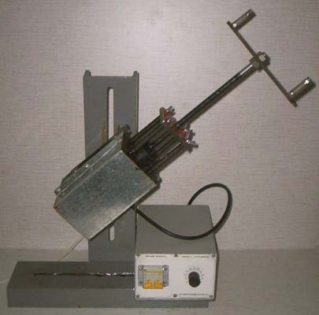
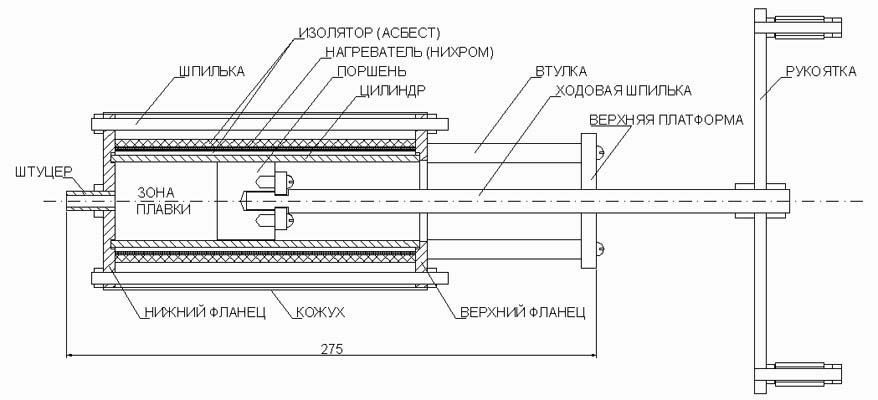
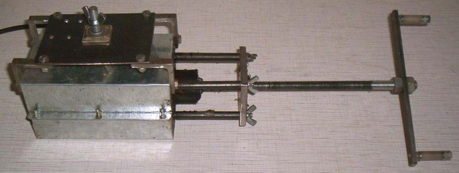
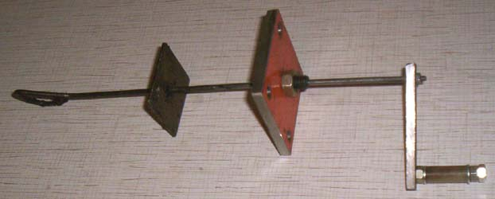
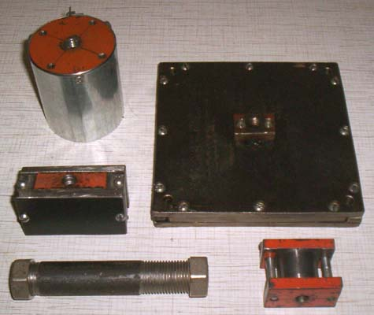
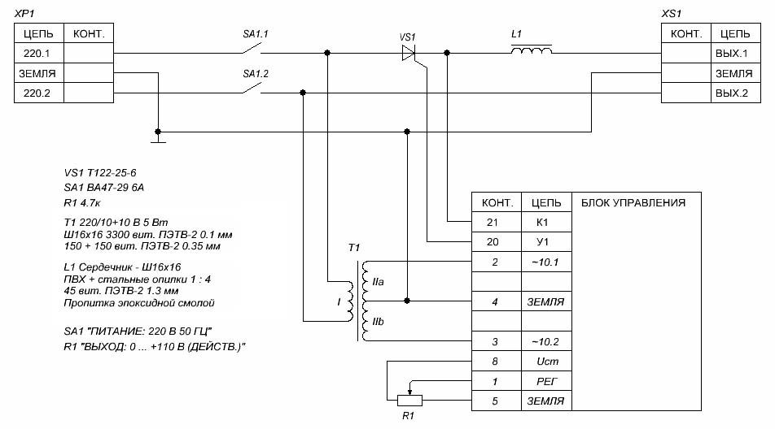

Малогабаритная ручная установка для
литья под давлением
деталей из термопластичных полимеров (рабочий объем 150 см3)

Установка предназначена для литья под давлением различных заготовок и деталей - пластин, стержней, немагнитного крепежа, электроизоляторов, шкивов, шестерен и т. д. из термопластичных полимеров. Исходным сырьем могут служить отходы полиэтилена, полипропилена, поливинилхлорида, полистирола, капрона и т. п. Установка может также быть использована для изготовления магнитопластов [1] и ферропластов на основе термопластичных полимеров (например, поливинилхлорида).
Характеристики:
Конструкция установки
Установка состоит из литьевого устройства и регулятора мощности [2], установленных на станине [4]. Эскиз литьевого устройства представлен на рис. 1, внешний вид - на рис. 2.

Рис. 1. Эскиз литьевого устройства.

Рис. 2. Внешний вид литьевого устройства.
Внутри стального цилиндра с помощью ходовой шпильки перемещается стальной поршень, выдавливающий расплав полимера из зоны плавки в пресс-форму через отверстие в штуцере. Зазор между поршнем и цилиндром минимальный (десятые доли миллиметра), чтобы расплав полимера не продавливался между ними. Цилиндр обернут асбестовой изолирующей прокладкой, поверх которой намотана нихромовая спираль (нагреватель). Снаружи нагреватель обматывается виток к витку асбестовым шнуром (для тепло- и электроизоляции). На торцах цилиндра установлены нижний и верхний фланцы, стянутые шпильками. В нижний фланец вкручен штуцер с отверстием для выхода расплава и резьбой для навинчивания пресс-форм. В верхнем фланце имеется загрузочное отверстие, через которое при поднятом цилиндре в зону плавки засыпается исходное сырье. На верхнем фланце на четырех втулках установлена верхняя платформа, в центре которой сделано отверстие с резьбой под ходовую шпильку. На конце ходовой шпильки крепится рукоятка, с помощью которой ходовая шпилька приводится во вращение, перемещая поршень. Вся конструкция закрывается стальным кожухом и крепится к основанию четырьмя уголками. Выводы нагревателя соединяются с питающим кабелем через клеммную колодку, расположенную на основании. На основании имеется винт для крепления литьевого устройства к станине в требуемом положении. В случае необходимости перемешивания расплава может быть использована мешалка, изображенная на рис. 3.

Рис. 3. Внешний вид мешалки.
Перемешивание расплава полимера позволяет повысить его однородность, особенно при использовании наполнителя, в частности, магнитного или ферромагнитного порошка. В этом случае верхняя платформа вместе с ходовой шпилькой, рукояткой и поршнем снимается, и вместо них устанавливается мешалка Мешалка состоит из верхней платформы, в отверстие которой продет стальной стержень с венчиком. На стержне крепится рукоятка, с помощью которой мешалка приводится во вращение. Для снижения выделений дыма на стержень надета квадратная шайба, закрывающая в рабочем положении загрузочное отверстие в верхнем фланце.

Рис. 4. Пресс-формы.
При изготовлении деталей совместно с литьевой установкой используются различные пресс-формы и насадки, внешний вид некоторых из которых показан на рис. 4. Пресс-формы изготавливаются из стали или дюралюминия, имеют разборную конструкцию (чтобы было можно извлекать отлитую деталь), входное отверстие с резьбой для навинчивания на штуцер литьевого устройства, литьевые каналы и технологические отверстия для выхода воздуха при заполнении расплавом.
Регулятор мощности
Для совместной работы с установкой используется однофазный тринисторный регулятор мощности [2] с выходным напряжением 0 ... +110 В, схема которого приведена на рис. 5.

Рис. 5. Схема электрическая принципиальная тринисторного регулятора мощности.
Порядок работы
В качестве исходного сырья используются предварительно вымытые и просушенные обрезки полимеров - полиэтилена, полипропилена, поливинилхлорида, полистирола, капрона и т. п. Размер обрезков желательно не более 5 мм, но можно использовать и гораздо более крупные с ухудшением качества литья. В качестве наполнителя могут применяться различные порошковые материалы. Сырье и наполнитель загружаются в требуемом количестве через загрузочное отверстие при поднятом вверх поршне. Затем поршень опускается, чтобы закрыть загрузочное отверстие. Включается регулятор мощности, выходное напряжение устанавливается в зависимости от требуемой температуры (обычно 200 ... 300 0C). Сырье нагревается примерно за полчаса. При необходимости расплав перемешивается мешалкой, установленной на литьевой прибор вместо поршня с ходовой шпилькой. Собранная пресс-форма, предварительно очищенная, смазанная машинным маслом и нагретая в печи [3] до температуры 100 ... 150 0C, навинчивается на выходной штуцер. Затем посредством вращения рукоятки поршень опускается, и расплав выдавливается в пресс-форму. При ее заполнении нагрузка на поршень резко возрастает, или из технологических отверстий начинает выдавливаться расплав. После этого пресс-форма снимается, охлаждается на воздухе или в воде и разбирается, чтобы можно было извлечь деталь. После очистки, смазки и сборки пресс-форма снова готова к работе.
С помощью различных насадок можно производить непрерывное литье заготовок, например, стержней, а также заготавливать крупные гранулы из отходов сырья для удобства последующей переработки.
Состояние разработки
Практическое применение в лабораторных условиях для изготовления полимерных деталей и постоянных магнитов.
Ссылки:
18.02.2010
Альтернативные источники
энергии
Компьютеры и
Интернет
Магнитные поля
Механотронные системы
Перспективные
разработки
Электроника и технология